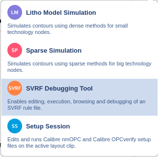

In Simulation Mode (Litho Model and Sparse Simulation modes), using the tool requires you to configure a session and process configuration before creating one or more process conditions.
In Debugging Mode (SVRF Debugging Tool and Setup Session modes), you open and edit existing SVRF, Calibre® nmOPC™, and Calibre® OPCverify™ scripts.
Reference |
GUI Element |
Description |
|---|---|---|
A |
Session Management |
Shows the list of sessions active in the GUI. Use the modal selector in the upper right hand corner menu (red
box in the top figure) to select a mode:
 |
B |
Process Management |
Sets or changes process component information. Models and layer definitions are set in this area. |
C |
Process Window Conditions |
Lists defined process window conditions. Operations (such as print image, intensity cutline, and image map) are run on the list. |
D |
Process Window Analysis |
Generates a process window from a litho model, and displays the results in the PW Plot tool. This operation can be performed without an OPC recipe. |
E |
Log |
Shows operation results. |
F |
Source Editor |
Shows SVRF, Calibre nmOPC, or Calibre OPCverify source files when loaded in Debug Mode. |
G |
Source Browser |
Shows components for the file in the Source Editor based on the Info Controls. Hovering over an item may reveal additional controls. |
H |
Browser Controls |
Selects which group type is visible in the Source Browser. |